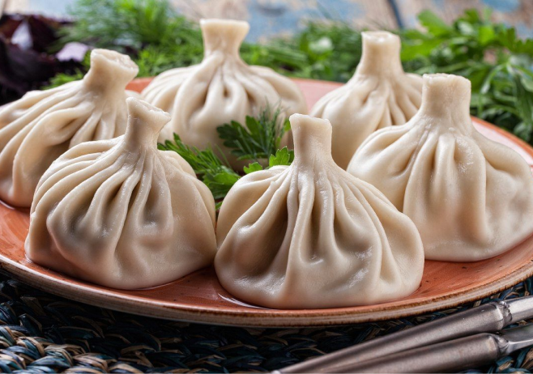

Хинкали
СПРАВОЧНАЯ ИНФОРМАЦИЯ
Хинкали — блюдо грузинской кухни из горных областей Пшави, Мтиулети и Хевсурети в Грузии, получившее распространение в других районах Кавказа и по всему бывшему СССР.
Начинка для хинкали готовится из говядины/телятины или свинины (частый вариант — говядина со свининой), реже — баранины или ягненка. Начинка может быть рубленой (классический вариант) или в виде фарша. К ней в обязательном порядке добавляется много различных специй и зелени. Существуют также хинкали с сырами (сыр чаще сулугуни), которые являются заменой мясным блюдам для вегетарианцев, а также придают разнообразие насыщенной мясными блюдами грузинской кухне. Сугубо вегетарианским блюдом являются хинкали с грибами. В хинкальных с большим ассортиментом в качестве начинки могут выступать грибы с сыром, индейка и даже мясо раков.
Важный элемент в создании хинкали — работа над формой. Традиционно грузинские кулинары лепят их таким образом, чтобы на верхушке получился небольшой «хвостик» из теста. Считается, что хинкали у основания (при подходе к хвостику) должны иметь 19 складок. Так их легко держать; при этом хвостик ещё и быстрее остывает. Обычно непроваренный хвостик выбрасывается (также по хвостикам удобно считать, кто сколько хинкали съел). Слепленные хинкали отваривают в кипящей воде (наиболее распространенный вариант) или жарят. В некоторых заведениях к каждому виду хинкали с разными начинками предлагают как варёный, так и жареный варианты.
Характерная особенность блюда (прежде всего, с мясной начинкой и, в особенности, варёные варианты) — наличие внутри каждой «хинкалины» большого количества «сока» (фактически бульона). В результате процесс поедания усложняется, а есть рекомендуется именно руками: использование вилки и ножа не позволит сохранить сок внутри «хинкалины».